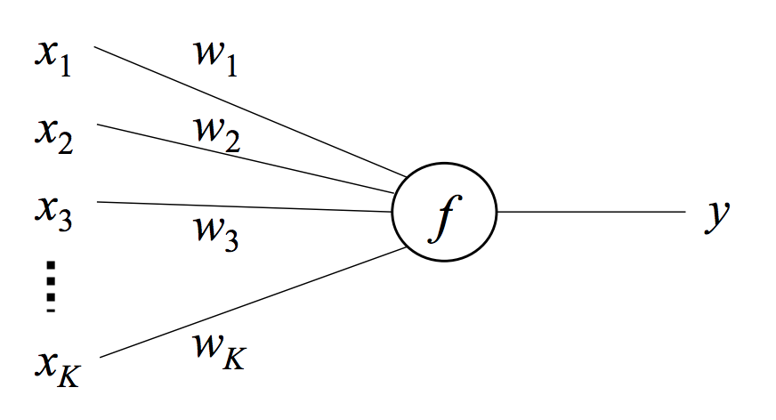
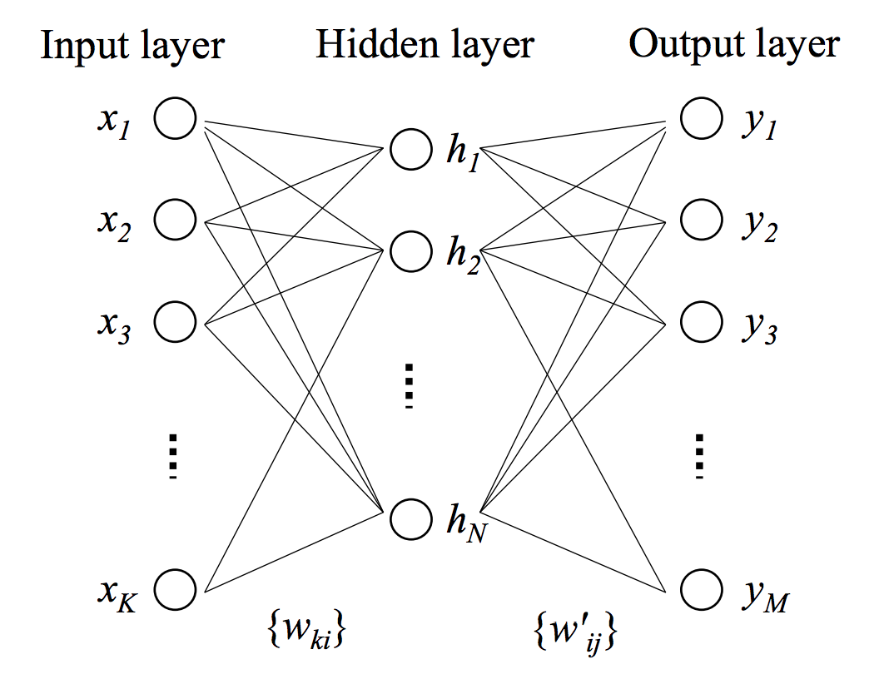

- on Wed 14 October 2015
Category: Supervised Learning
In the last couple of years Deep Learning has received a great deal of press. This press is not without warrant - Deep Learning has produced stat-of-the-art results in many computer vision and speech processing tasks. However, I believe that the press has given people the impression that Deep Learning is some kind of imprenetrable, esoteric field that can only be understood by academics. In this blog post I want to try to erase that impression and provide a practical overview of some of Deep Learning's basic concepts.
At its core, Deep Learning is a class of of neural network models. That is, a model with an input layer, an output layer, and an arbitrary number of hidden layers. These layers are made up of neurons or neural units. They are called neurons because they share some similarities with the behaviour of the neurons present in the human brain (though this comparison has drawn a lot of criticism from neuroscientists). For our purposes, we can think of a neuron as a nonlinear function of the weighted sum of its inputs. Since the neuron is really the most basic part of any Deep Learning model it is a good place to start.
The Single Neuron Model
A neuron is a function that maps an input vector \(\{x_1,...,x_K\}\) to a scalar output \(y\) via a weight vector \(\{w_1,...,w_K\}\) and a nonlinear function \(f\).

The function \(f\) takes a weighted sum of the inputs and returns \(y\).
Often an additional element is added to the input vector that is always equal to \(1\) with a corresponding additional weight element which acts as a bias. The function \(f\) is called the link function which provides the nonlinearity between the input and output. A common choice for this link function is the logistic function which is defined as
With the appropriate substitutions the final formula for the single neuron model becomes
If you plot the logistic function,

you can see that it is smooth and differentiable and bound between \(0\) and \(1\). We shall see that these are two important properties. The derivative of the logistic function is simply
This derivative will be used when we learn the weight vector \(\bf{w}\) via stochastic gradient descent.
Like any optimization problem, our goal is to minimize an objective function. Traditionally, the objective function measures the difference between the actual output \(t\) and the predicted output \(f(\mathbf{w^Tx})\). In this case we will be using the squared loss function
We want to find the weights \(\mathbf{w}\) such that the above objective is minimized. We do this with stochastic gradient descent (SGD). In SGD we iteratively update our weight parameters in the direction of the gradient of the loss function until we have reached a minimum. Unlike traditional gradient descent, we do not use the entire dataset to compute the gradient at each iteration. Instead, at each iteration we randomly select a single data point from our dataset and move in the direction of the gradient with respect to that data point. Obviously this is only an approximation of the true gradient but it can be proven that we will eventually reach the minimum by following this noisey gradient. There are several advantages to using stochastic gradient descent over traditional gradient descent.
- Gradient descent requires loading the entire dataset into main memory. If your dataset is large this can be problematic. Stochastic gradient descent only requires one data point at a time (or sometimes a minibatch of data points) which is much less memory intensive.
- Most datasets have redundancy in them. Traditional gradient descent requires one full pass over the data until an update is made. Due to redundancy, a meaningful update can often be made without iterating over the entire dataset as with stochastic gradient descent.
- As a consequence of the previous point, stochastic gradient descent can often converge faster than traditional gradient descent. It is also guaranteed to find the global minimum if the loss function is convex.
Our objective function \(E\) is already defined in terms of a single data point so let's procede to compute its gradient with respect to an aribtrary element of our weight vector \(w_i\).
Now we are able to obtain the stochastic gradient descent update equation (in vector notation)
Where \(\eta>0\) is the step size. As stated previously, \((\mathbf{x},y)\) data points are sequentially fed into this update equation until the weights \(\mathbf{w}\) converge to their optimal value. This is how we use stochastic gradient descent to learn the weights for the single neuron model.
What we just did is also known as logistic regression and if we had replaced our logistic function with a unit step function we would have made what is known as a perceptron! Now let's extend this relatively simple model to something a bit more complex...
The Neural Network
A neural network consists of an input layer, output layer, and hidden layer. Our input layer consists of the input vector \(\mathbf{x}=\{x_1,...,x_K\}\). The hidden layer consists of a vector of \(N\) neurons \(\mathbf{h}=\{h_1,...,h_N\}\). Finally there is an output layer with one neuron for every element of the output vector \(\mathbf{y}=\{y_1,...,y_M\}\). Every element in the input layer is connected to every neuron in the hidden layer with \(w_{ki}\) indicating the weight associated with the connection between the \(k^{th}\) input element and the \(i^{th}\) hidden neuron. The same connection structure is present between the hidden and output layers with \(w'_{ij}\) indicating the weight associated with the connection between the \(i^{th}\) hidden neuron and the \(j^{th}\) output neuron. This network structure is better illustrated in the below diagram.

It is helpful to think of the weight \(w_{ki}\) as the the \((k,i)^{th}\) entry in a \(K \times N\) weight matrix \(\mathbf{W}\) and similarly weight \(w'_{ij}\) as the \((i,j)^{th}\) entry in a \(N \times M\) weight matrix \(\mathbf{W'}\). The output of each neuron in the hidden and output layer is computed in the exact same way as before. It is simply the logistic function applied to the weighted sum of the neuron's inputs. For example, the output of an arbitrary neuron in the hidden layer \(h_i\) is
and similarly for the output of an arbitrary output neuron \(y_j\) is
The objective function is also the same as before except now it is summed over all elements in the output layer.
Unlike before, we need to construct update equations for both sets of weights - the input-to-hidden layer weights \(w_{ki}\) and the hidden-to-output weights \(w'_{ij}\). In order to do this we need to compute the gradient of our objective function \(E\) with respect to \(w_{ki}\) as well as the gradient with respect to \(w'_{ij}\). We must start with the gradient with respect to \(w'_{ij}\) (the hidden-to-output weights) and we shall see why later. In order to compute \(\frac{\partial E}{\partial{w'_{ij}}}\) we must recall our high-school calculus, specifically the chain rule. From the chain rule, we must first take the derivative of \(E\) with respect to \(y'_j\). Then we must take the derivative of \(y_j\) (i.e. the logistic function) with respect to \(w'_{ij}\) which needs yet another application of the chain rule. We first take the derivative of the logistic function with respect to its input \(u'_j\), then finally we can take the derivative of this input with respect to \(w'_{ij}\) and we arrive at our desired value. This process is clearly defined below.
From the chain rule,
The derivative of \(E\) with respect to \(y_j\) is simply,
From the last section we saw that the derivative of the logistic function \(f\) with respect to its input \(u\) is \(f(u)(1-f(u))\). If we apply this we get,
where \(y_j=f(u'_j)\). Next we compute the derivative of \(u'_j=\sum^N_{i=1}w'_{ij}h_i\) with respect to a particular \(w'_{ij}\) which is simply \(h_i\). So, after making the appropriate subsitutions, we get
With this gradient we can construct the update equation for \(w'_{ij}\)
Now let's turn our attention to the gradient of the objective function with respect to the input-to-hidden weights \(w_{ki}\). As we shall see, this gradient has already been partially computed when we computed the previous gradient.
Using the chain rule, the full gradient is
The sum is due to the fact that the hidden unit that \(w_{ki}\) connects to is itself connected to every output unit, thus each of these gradients need to be taken into account as well. We have already computed both \(\frac{\partial E}{\partial y_j}\) and \(\frac{\partial y_j}{\partial u'_j}\) which means that
Now we need to compute the remaining derivatives \(\frac{\partial u'_j}{\partial h_i}\), \(\frac{\partial h_i}{\partial u_i}\), and \(\frac{\partial u_i}{\partial w_{ki}}\). So let's do just that.
and, again using the derivative of the logistic function
and finally
After making the appropriate substitutions we arrive at the gradient
And the update equation becomes
This process is known as backpropagation because we begin with the final output error \(y_j-t_j\) for the output neuron \(j\) and this error gets propagated backwards throughout the network in order to update the weights.
Wrapping Everything Up
In this blog post we started with the simple single neuron model and we learned the model weights by computing the gradient of the objective function and using it in the stochastic gradient descent update equation. Then we moved on to the slightly more complicated neural network model. In this case we computed the required gradients using a procedure known as backpropagation and we again used these gradients in the SGD update equations. True Deep Learning models either contain many more hidden layers or neurons in different configurations but they still adhere to the basic principles described here. Hopefully this post has made Deep Learning seem like a more understandable and less daunting field of machine learning.